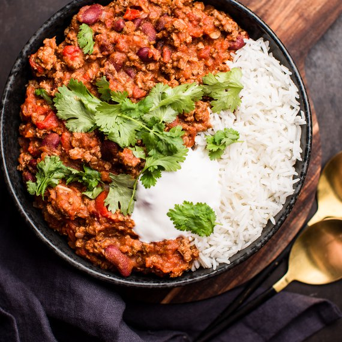

Chilli con Carne

Descreption
A Spicy stew containing chili peppers (sometimes in the form of chili powder), meat (usually beef), tomatoes, and often pinto beans or kidney beans.
Other seasonings may include garlic, onions, and cumin. The dish originated in northern Mexico or southern Texas.
Ingredients
- Minced meat (preferably beef)
- Tomato passata
- Garlic
- Onion
- Red beans
- Beef stock
- Cumin powder
- Smoked paprika
- Chilli pepper
- Oregano
- Salt
- Pepper
- Hot souce (optionally)